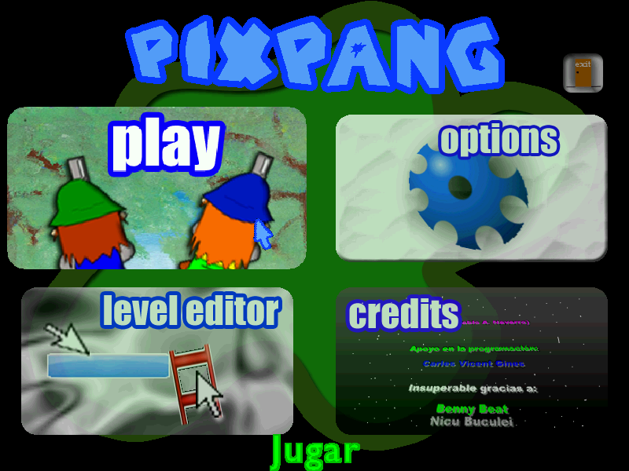
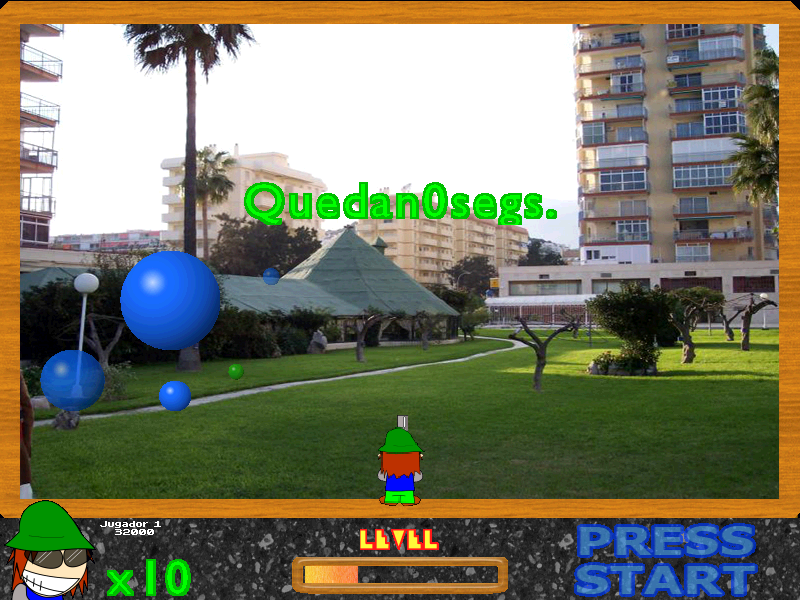

Descargas
Información
Guías
PiX Pang: 1.6d
Esta versión es más parecida a la 2.0 comparado a las anteriores. Las diferencias más notorias son el menú, la intro y la hitbox del jugador, además de carecer algunos efectos de sonido y música.
Quiero creer que esta es la última build de la 1.6, probablemente esta sea el release final, puesto que tiene bastante parecido a la 2.0.
Fue compilado en Fénix 0.84. No funciona en Windows Vista ni en adelante.

Menú

Ingame
Curiosidades:
- Presenta algunos bugs visuales, aunque probablemente es cosa mía.
- Es de las pocas versiones que tiene el archivo "reconline", un archivo que envia una solicitud HTTPS a un servidor para enviar un record de puntaje. (jamás implementado)